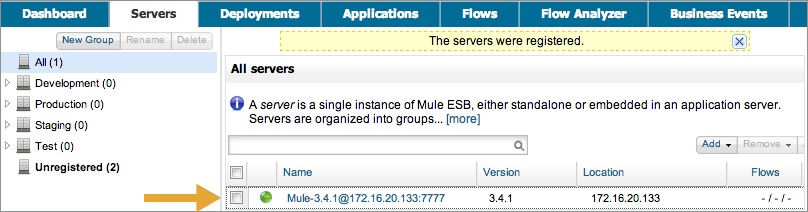
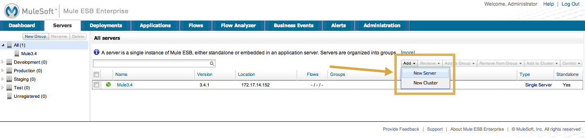
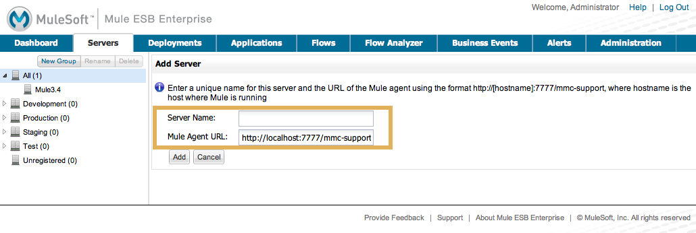
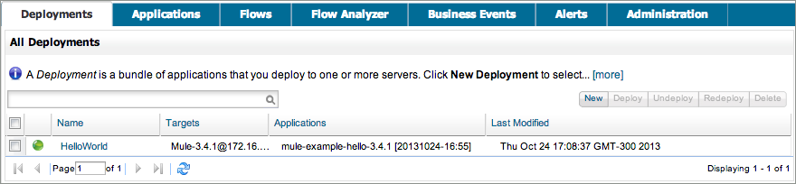
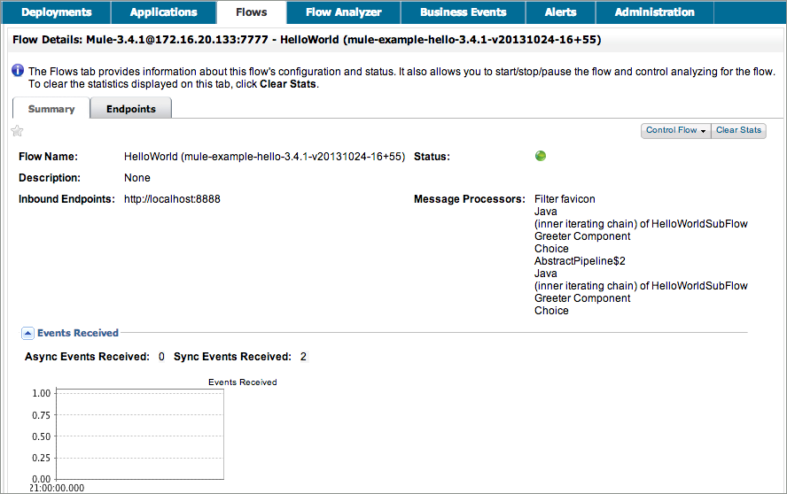
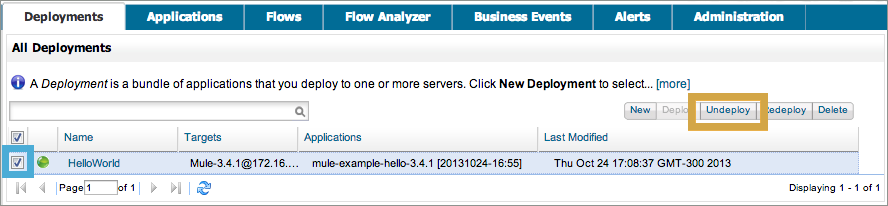

MMC Walkthrough
Mule Management Console’s graphical interface offers visibility into your Web application server(s) so you can monitor and manage multiple Mule applications.
Walkthrough Description |
This walkthrough illustrates some of the basic functionality MMC provides as a monitoring tool:
|
End Result |
At the end of this walkthrough, you’ll have successfully deployed a sample application onto a server using the console, verified the health of the application by monitoring the activity of the individual flows, and undeployed the application from the server. |
Learning Outcome |
After completing the walkthrough, you understand the basic mechanisms by which you can register servers and deploy and manage applications using the console. |
Assumptions
This walkthrough assumes that you are familiar with Mule applications and Mule flows and that you have downloaded and installed MMC from the Support Portal. Beyond installation, you do not need to complete any specific setup configurations to complete this walkthrough.
Launching MMC
$MULE_HOME is the directory where your Mule installation resides, for example /opt/mule-3.4.1.
|
For the production version, you must first deploy MMC to your application server and start the MMC application. For instructions deploying MMC to different application servers, see the installation documentation.
Login to MMC with the following credentials:
-
User:
admin -
Password:
admin
The console Dashboard "Quick Start" panel, which displays when you first login, indicates that there are no servers to register. Close the Quick Start panel by clicking the X in the upper right corner.
Registering the Server
Before you use MMC to deploy Mule applications to a server, you must first identify the server to MMC. This action is called registering the server.
If you run the production version, you’ll have to register the server manually. The simplest way to do this is using MMC’s auto-discovery feature. The console automatically senses that a Mule server is running and captures much of the information needed for registration, thus making it easy to register any "discovered" servers.
-
Click the Servers tab, then click Unregistered in the left navigation pane.
-
The console lists all servers that have come online and are not yet registered. Select the Mule-3.4 server, then click the Register button.
image::mmc-register-servers.png[mmc-register_servers] -
Click All in the left navigation pane to view the server you registered.

Alternatively, you can manually register a server. To do so,
-
Click the Servers tab, then the Add button, then select New Server.
 -
In the screen that opens, enter a Server Name and a Mule Agent URL for the server, then click Add.

Deploying an Application
Having identified a server to the console, you can now deploy applications to it. To do so, you first create an application group, known as a "deployment," which bundles applications so you can deploy the group to one or more servers. Then, within the deployment, you deploy an application. This walkthrough describes how to deploy the Hello application included as an example application in the example folder in the Mule ESB download.
-
Click the Deployments tab in the console.
-
Click New to create a new deployment.
-
Enter a unique Deployment Name, such as
HelloWorld. -
Click the Upload New Application button.
-
In the dialog that appears, use the Browse button to navigate to the following filepath:
$MULE_HOME/examples/hello/mule-example-hello-3.4.1.zip. -
Click Add. The console uploads the application within the deployment (see below).
image::uploaded.png[] -
To identify the server to which to deploy the HelloWorld deployment, use the drop-down list under the Servers heading to select the server that the console registered for you upon launch.
image::mmc-uploaded-server.png[mmc-uploaded_server] -
Click Deploy to deploy the HelloWorld deployment (containing the Hello application) to the server.
When you deploy the application, the console automatically saves the Hello application to the server repository. If you wish, you can click Save instead of Deploy to simply save the applications to the server repository for later deployment. Click Repository in the left navigation panel to view all applications saved in the repository.
Using the Deployed Application
To confirm that the Hello application is up and running, enter the following URL in your browser:
http://localhost:8888/?name=Ross
The application returns a response, confirming that the application has indeed been deployed.
Viewing Flow Details
After using the application to return a "hello" response, you can access the console window to view details about how the request was processed.
-
In the console, click the Flows tab. The screen displays only the flows within the Hello application. The table shows a summary of the number of events handled by the application (both processed and received events), along with the average and total event processing time per individual flow (see below).

-
You can pause, stop, or start an individual flow, or flows. For example, use the checkboxes to select one or more flows, then click the Control Flows button, then select Stop to stop the flow from accepting any more events.
-
Click a flow name to examine more detailed information about the flow. For example, click the HelloWorld flow name to open a screen with two tabs:
-
The Summary tab displays summary information about the flow such as the message sources and message processors it contains, its status (started, stopped, paused), and details about the events it has received and events it has processed.
 -
The Endpoints tab displays a table of all endpoints for the flow and data about each endpoint, including the endpoint type, its address, connector information, whether or not it is filtered, if it is synchronous or asynchronous, and whether it handles transactions. Click one or more endpoints and, using the Control Endpoints button, start or stop those endpoints.
image::flow-endpoints.png[]
-
Undeploying the Application
-
Click the Deployments tab.
-
Check the box next to the HelloWorld deployment.
-
Click Undeploy. The console stops all applications in the selected deployment. In this example, you only had one application (Hello) in the deployment.
 -
To stop Mule itself, hit
Ctrl+Cin the terminal where you launched Mule. If you launched Mule in the terminal background, issue the command$MULE_HOME/bin/mule stop.
See Also
-
Orient yourself further to the console
-
Learn how to set up your MMC instance to work with other components in your enterprise
-
Learn about the technical architecture of MMC